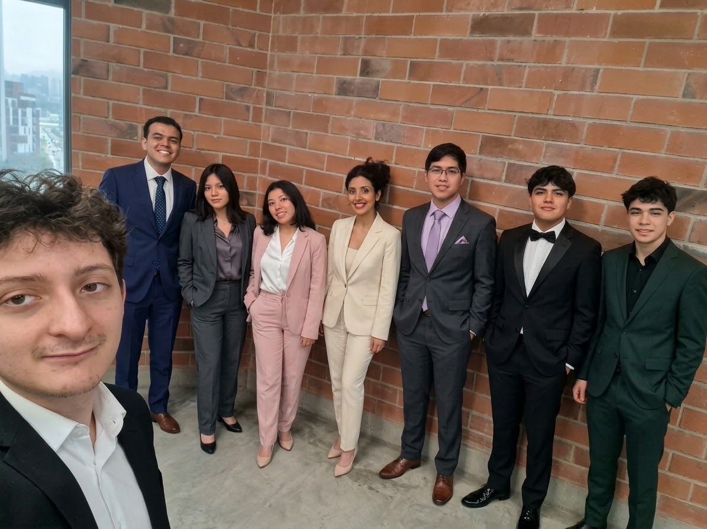
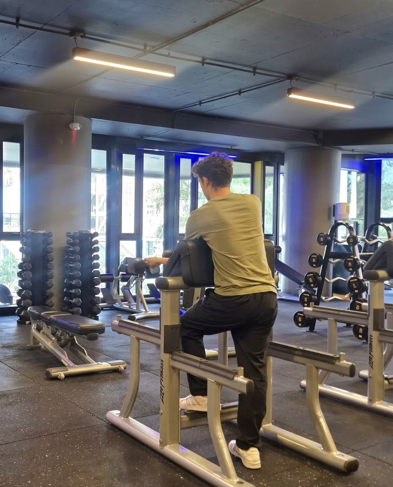
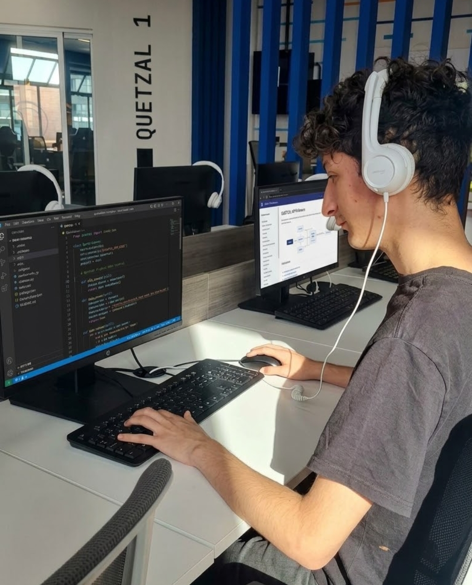

Detrás de la pantalla

Quién soy
Me considero una persona amable, serena y altamente cooperativa, con una gran facilidad para relacionarme con los demás. Disfruto profundamente conectar con las personas y construir relaciones interpersonales sólidas, promoviendo un ambiente de trabajo empático y colaborativo tanto dentro como fuera del entorno laboral.

Vida saludable
Más allá del ámbito del código, mantengo un estilo de vida saludable y activo a través del ejercicio físico regular. Esta rutina me permite cultivar valores como la disciplina, la perseverancia y el equilibrio personal, indispensables para conservar un alto nivel de energía y enfoque en mis proyectos cotidianos.

Progresión de aprendizaje
Tengo un fuerte compromiso con mi crecimiento profesional y la formación continua. Me motiva ampliar y perfeccionar mis conocimientos de forma constante, lo que me permite adaptarme a nuevos desafíos, aportar soluciones de valor al equipo y avanzar progresivamente en mi trayectoria laboral.
Habilidades Técnicas
HTML5
Estructura Web Semántica
CSS
Diseño Estilizado y Moderno
JavaScript
Lógica Interactiva Avanzada
Node.js
Entorno de Ejecución
Express.js
Framework Servidor Web
MongoDB
Base de Datos NoSQL
MySQL
Base de Datos Relacional
Git & GitHub
Control de Versiones
Scrum
Gestión ágil de proyectos
n8n Workflow
Automatización de Procesos
Inteligencia Artificial
Prompting & Integración
Proyectos Destacados
Conciertos conxion
proyecto para compra y venta de boletos para conciertos
el queso es rico
Interfaz administrativa responsiva donde el cliente interactúa con la API. Presentación visual de datos y formularios interactivos.
Habilidades Adaptativas
Amable
Trato Cercano y Positivo
Paciente
Calma y Gestión de Presión
Empático
Escucha y Comprensión
Inglés B1.2
Nivel Intermedio Técnico
Español
Nativo
Colaborativo
Trabajo en Equipo
Creativo
Soluciones Innovadoras
Tenaz
Perseverancia y Firmeza
Versatilidad
Flexibilidad y Aprendizaje
Analítico
Pensamiento Lógico y Resolución
Contacto
Estoy disponible para nuevas oportunidades y colaboraciones. ¡Contáctame!